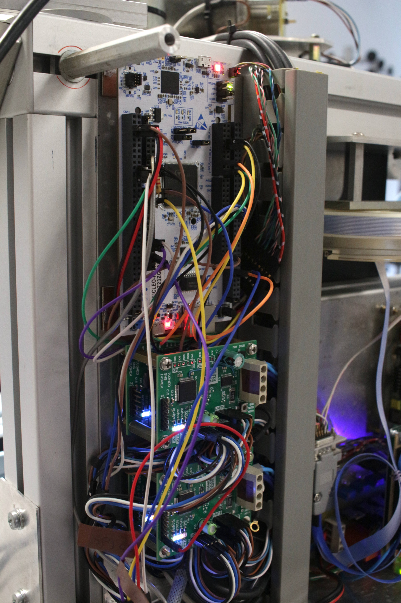

Master board
Introduction
Rationale
As anticipated in the system architecture, the master board contains the true brains of the machine, the Master Control Unit (MCU). Its job is to control the slave motor drivers, the heater, the ultrasonic element, etc.
Building a custom PCB
Same as in the slave driver boards we decided to build a custom PCB for the master control board. Building the board by hand is unthinkable, as there are too many connections to make (the LCD screen, the external RAM, the serial communication with the slaves and so on). Using a ST Nucleo with tens of jumpers would be bulky and unreliable. Wires must not disconnect or move when moving the bonding machine and furthermore the circuit operates in the MHz frequency range, making connections length and layout important.
Current state

As you might have already noticed in some previous sections (the first and
second bonding experiments, the power supply
and the LCD), we are using a Nucleo-H723ZG as the brain of the machine
instead of a custom PCB.
This is mainly because we haven't yet decided on what external RAM technology to use.
Unfortunately, we cannot test the various external RAM technologies due to interconnection parasitic effects as it
was shown here. We have to design the complete PCB first, and only then we will be able
to check if the RAM is working as intended or not. In order to keep development costs down, we decided to not
build the final PCB until we were absolutely sure about every single design aspect regarding the MCU.
We decided to use a Nucleo-H723ZG as it uses the
same microcontroller that we want to deploy on the final PCB, namely the STM32H723ZGT6 whose datasheet can be
found in the downloads area. We have temporarily mounted the Nucleo-H723ZG
on the machine's electronics panel as shown in the image on the right to make the assembly tidier; the Nucleo
will be eventually replaced by the final PCB when it will be realized.
Firmware
The firmware we developed for the MCU can be downloaded in the downloads area of this website.